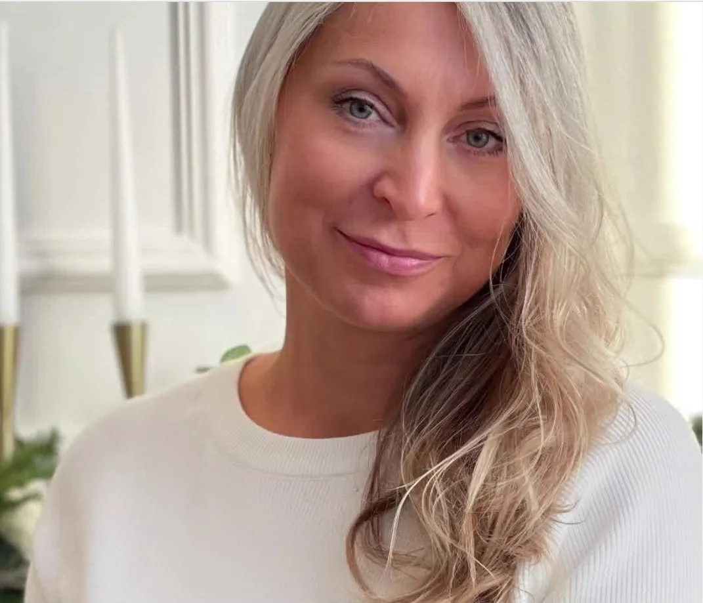

11 февраль 2022 г.
Давайте знакомиться ❤️

Привет! Я Ксения Скиперская, мне 50 лет, у меня двое взрослых детей и я уже рада быть бабушкой. Мой жизненный путь был полон вызовов, но каждый шаг укреплял мою веру в себя.
С детства меня манила психология — интерес, что движет людьми, был как вдохновение. В итоге этот интерес стал моей профессией. Во время обучения я преодолела множество личных и учебных препятствий, что помогло мне глубже понять себя и мир вокруг.
Мой профессиональный путь начался, когда мне было 27 лет — я уже была женой, мамой и владелицей салона красоты. В институте проводила исследование, посвященное влиянию личностных особенностей женщин на период грудного вскармливания. Это частично повлияло на выбор моего жизненного курса, и теперь я помогаю не только в этом вопросе, но и разбираться с другими жизненными трудностями
Сегодня у меня частная практика, где основной акцент делается на мышлении, когнитивных искажениях, коррекции поведения и работе с эмоциями. Мои клиенты — это не просто люди, для меня они уникальные личности, которым я помогаю в поиске гармонии и понимания себя.
Я не просто помогаю решать проблемы, я поддерживаю своих клиентов всей душой. Моя цель — расширить их восприятие, показать новые горизонты и помочь найти свой путь.
Моя жизнь на две страны — Эстонию и Германию — подчеркивает мою свободу и гибкость в выборе. После продажи бизнеса я решила перейти в онлайн и делиться своим опытом для того, чтобы помогать большему количеству людей управлять своей жизнью и ощущать себя счастливыми. Однако возможность очных консультации по-прежнему есть в моем родном Таллинне в собственном кабинете.
Я глубоко уважаю своих клиентов и благодарю их за доверие. Присоединяйтесь к моим страницам в Instagram или Facebook, где я не только делюсь информацией о своей профессиональной жизни, но и предлагаю конкретные шаги для саморазвития и самопомощи. Буду рада видеть вас там!
Отзывы
Психологические консультации online c Ksenia Skiperskaja
Образование https://psychology-online.eu/pages/about-psycholog
Instagram https://www.instagram.com/psycholog.skiper/?hl=ru
Ютуб https://www.youtube.com/channel/UClSMi7sbTcAyHdHvy0WwB6w
Записаться на консультацию https://psychology-online.eu/products/psiholog-pomos-online